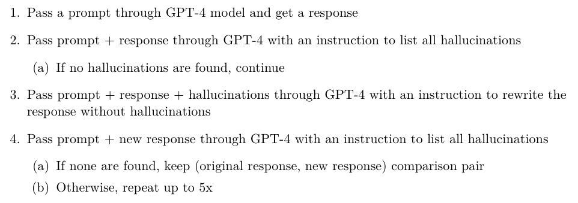

Context
At first glance, gpt4 is 80% fear and 20% excitement. I’m afraid of its capability, impact to the future of work, and worried about advanced intelligence being controlled by single organization.
However, fear is not real. Danger is. Fear is a mental construct mostly caused by ignorance. In hope to cure the ignorance, I go on studying and using gpt4. After few weeks of processing, the fear subsides. I have better understanding of gpt4’s capability, limitation, risk and the future.
The sheer existence of GPT4 is pivotal to me. It is a wake up call: be prepared to live with AI at all level. I believe GPT4 is pivotal to the society as well. Prepared or not, AI is coming. Open letter1 like this won’t slow it down, but accelerate. The letter basically validates the hype and few rounds of clickbait journalism and doom hyper would fuel the fear. Leading AI companies would have to handle AI R&D as scientific discovery and political campaign in the post-GPT4 era. AI is political and even more so from now on.
Here is my opinion and I won’t bother to be neutral. I could be wrong and I am ready to be.
tl;dr
My understanding of gpt4 is mostly based on 3 papers and 2 videos. Info per token is so high that requires few rounds of study to fully grasp all nuances from these sources. Here are the most important lesson learned from each. The following article would expand on few points.
- Sparks of Artificial General Intelligence: Early experiments with GPT-4 (Bubeck et al. 2023).
- Traditional benchmarks are not enough. They fail to capture semantic similarities within statements, and rely primarily on word or sentence-level similarity metrics which capture syntax.
- Pure text autoregressive model could learn visual representation and more.
- Natural language and code are more controllable than pixels. Symbolic intermediate layer could be useful proxy to high dim modality manipulation. Ex:
fn(text) -> image: text -> code -> well controlled skeleton sketch -> super resolution. - CoT is linear decomposition. Useful but not enough. To express loop, recursion and more complex reasoning, multistep modification of scratchpad is helpful. Could use one agent’s context window as scratchpad, aka RAM, and retrieval system as HD. The multi-agent organization to approx system 2 thinking would be an interesting research direction.
- The limitations of the next-word prediction paradigm, which manifest as the model’s lack of planning, working memory, ability to backtrack, and reasoning abilities. The model relies on a local and greedy process of generating the next word, without any global or deep understanding of the task or the output.
- Current level AI is good at incremental tasks, while human could be good at discontinuous tasks.
- GPT-4 technical report (“GPT-4 Technical Report” 2023).
- The danger is real. Powerful AI is harder to align.
- Threshold crossed. GPT4 is good enough to contribute substantially to self-improvement. GPT3.5 is not as helpful.
- RL acts as information bottleneck, which is a form of regulation for better generalization. Apply RL on gpt4 is effective finetuning, contrary to traditional understanding of sample inefficiency due to RL’s sparse feedback. The order to cook intelligence matters.
- GPTs are GPTs: An Early Look at the Labor Market Impact Potential of Large Language Models (Eloundou et al. 2023).
- Occupation exposure is not important. Jobs would change dramatically in the future. Go first principle to skill level exposure.
- Focus resource and time on developing skills that humans have chance to do better than AI. ex: science and critical thinking.
- Fireside Chat with Ilya Sutskever and Jensen Huang: AI Today and Vision of the Future (Sutskever and Huang 2023).
- Autoregressive model on text is more than statistical token joint distribution. Text is one projection of the world. Learning from text is approximate the world thought a projection, which is essentially learning a world model.
- Learning from text is effective but not enough. Multimodal model would be more powerful and sample efficient. Scaling text model is not all you need.
- Sam Altman: OpenAI CEO on GPT-4, ChatGPT, and the Future of AI | Lex Fridman Podcast #367 (Lex Fridman 2023).
- We learned early on that we need way more capital that won’t be able to raised as non-profit.
- We need some benefits of capitalism but not too much. As a non-profit, nothing would happen. As a for-profit, too much would happen.
The following topics are not important to advance the frontier of AI. Learning to ignore is as useful as learning to pay attention given specific goal. Both are the process of cultivating taste, which is the first pass filter and ultimately decides the direction of change.
- SOTA benchmarks. Bar, SAT, GRE, AP test score: traditional benchmarks are like IQ for human. We all know they are deeply flawed but because these numbers are so relatable, we are not ready to let go. I treat them as quick and dirty AI unit tests and no more. Bar and SAT are great PR creator. Kudos to that.
- Training data leak to eval: getting this right is important to do good science, but don’t waste too much time on this since those benchmarks are not important anymore.
- OpenAI is not open. Details of architecture, training and data are not published: I hope they transition to ai.com as soon as possible to close this boring thread. Pure waste of bits.
- Whether gpt4 is AGI: all models are wrong, some could be useful. Intelligence is getting cheaper and cheaper. Risks and promises are closing in. Move on.
- Small distilled model on iPhone: this could be very impactful applied AI, but has nothing to do with the frontier.
Breakthrough
- GPT4 learns a world model from text.
- GPT4 conquers few more bits in the semantics realms to cross the threshold of being useful for self-improvement.
These breakthroughs fuel the excitement about the possibility of multimodal modal research, and the self-play moment for general AI, similar sentiment of AlphaZero (Silver et al. 2017) to Go. Are we already on the artificial intelligence super highway?
World model
To me, gpt4 is as impactful, if not more, as gpt3 (Brown et al. 2020). Before gpt3, people finetune one model per task. To make the finetuning work, data curation (>10k examples), training, deployment per task was the norm. GPT3 is a huge gamble. No one bothered training such a large model before. It’s a capital sink that could wreck a small company. Looking backward, the bet pays off very well. 2 lesson learned:
- Scaling the same architecture with more data works better.
- One LLM could perform many tasks with simple in-context learning.
After gpt3, Chinchilla (Hoffmann et al. 2022), Gopher (Rae et al. 2022), PaLM (Chowdhery et al. 2022), CoT (Wei et al. 2022), SC (Wang et al. 2022) flourished.
The lesson of gpt4, especially how it’s presented in Bubeck et al. (2023), is text only autoregressive model trained by next token prediction is actually learning a multimodal world model. Resonate perfectly with Ilya’s GPT23 talk:
Next token prediction is actually learning some representations of the process that produce the texts, which is a projection of the world.
This is a shocking revelation to me. I thought language model is just a huge joint distribution function, which happens to mimic some patterns in text. Turns out it’s more than that. Let’s take a look at few examples.
Seriously, how does LLM learn what unicorn looks like is still beyond me. Of course there are texts describing unicorns but it has never seen a picture and yet could still draw a better unicorn than me, in TeX?
This is even crazier. Out of uncountable names, gpt4 could recognize this artist name and somehow capture the gist of that artist’s style and use Javascript to render the picture. Speechless.
This one is more than a visual render. It combines the shape of English characters and the idea of the appearance of a person to generate a person, and the generation process is controllable by natural language instructions.
Astute readers would find the generation is secondary, meaning it’s not fn(text) -> pixel, but fn(text) -> code -> pixel. However it’s reasonable to assume gpt4 has the visual idea of the unicorn to generate relevant codes for the render. Plus, a hidden benefit of such secondary generation that could be very useful.
Modern text to image models have trouble following instructions with specific composition. My hunch is text|image joint entropy learned from CLIP, used by latent diffusion(Rombach et al. 2022) is not fine grained enough to support precise language instruction. For example:
However, gpt4’s unreasonable effectiveness of text to code could repurpose code as intermediate symbolic layer for fine grained instruction guided image generation.
This combines the compositionality of natural language, and the pixel generation of diffusion. Win-win.
Examples above should be enough to reiterate that learning from text is not just about text. If you think about it, texts feed into transformer are sequence of integers, ex: [332, 5242, 12, 24325, …]. We feel so strong on the difference among modalities, such as image, audio, texts, because they are really different semantically to us, humans.
Behind the veil of human semantics, patterns of all modalities are all generated from the same source, this world. Yes text is secondary, interpreted patterns through humans, but it’s powerful and expressive, plus no other modalities to better represent the nuances of human conditions than texts, such that learning from text could actually yield a very useful world model.
The research community is talking about common sense, basic physics and unspoken multimodal knowledge. That’s why text is just the bootstrapping phase not the end of AI. The future has to be multimodal.
Self improvement with RLHF
…there are benefits to squeezing as much performance as possible out of large generative image models, as significant semantic information may lie in the
last few bits–Henighan et al. (2020)
The general improvement of gpt4 over gpt3.5 make self improvement possible. However, we need to pay attention to what could be self-improved, and how.
LLM’s raw capabilities are sealed during pretraining. Ensuing instruction finetuning and RLHF are usability improvement. Imagine a genius who doesn’t know how to talk to normal people. You may think he is dumb and slow but the raw power is there. Say he reads how to win friends and influence people and suddenly, people around him may think his IQ points doubled over a weekend, but no. He is just more accessible after finetuning.
Unlocked self-improvement has 2 folds: self-evaluation, and self-finetuning.
There is no magic in self-evaluation. It’s not gpt4 has gained consciousness and grow the sense of self. GPT4 is stateless. Because it has learned few more bits than gpt3.5, it simple could evaluate whatever text better by following right prompts.
Here I want to use how OpenAI mitigates close domain hallucination with RLHF (Ouyang et al. 2022) as an example to illustrate how gpt4 contributes to self-improvement with the power of RL.
Take a look at the example of close and open hallucination.
OpenAI introduces a simple iterative procedure to apply gpt4 to evaluate its output and generate self correction.

The synthetic data is use to improve the mode via RLHF. (original response with hallucinations, new response without hallucination generated by gpt4) data are mixed into reward model dataset. This is RLHF
So on high level: SFT > RM > PPO. I don’t understand why initially. Super confused.
- Why RL?
- If Flan (Chung et al. 2022) is so successful, why not just SFT gpt4 with generated hallucination free data?
- Isn’t RL sample inefficient? Cherry on the cake? Sparse feedback makes credit assignment hard, which makes learning even harder? How many unreasonably amount of trials and errors to teach a simple robot in MoJoCo to run?
My hypothesis is under the right condition, RL’s disadvantages are actually great for cooking intelligence.
- Good enough base intelligence.
- Enough capacity to grow and change.
Let me use human learning as an unscientific example. The goal is to maximize learning, which teacher is more helpful?
- One that provides extensive explanation, step by step reasoning, even hold your hand during the learning process.
- One that only gives you binary feedback such as correct/incorrect, promising/exhausted, right direction/detour.
On the appearance, the attentive teacher seems to be the obvious choice, but I realize it depends.
For young Padawan, rich feedbacks and hand holding style is more effective. They need as immersive environment as possible to get over the init stage. They would really struggle with sparse, succinct feedback. Socratic method or Zen style teaching is too early.
On the contrary, for matured enough Jedi to become true master, he has to tackle unknown unknown and generalize mostly by himself. Breaking the frontier can’t by achieved by copy previous success. Overly involved teaching is not helpful, but obstacle that creates a ceiling for the promising Jedi. The guidance could be vague and abstract as long as the direction is good, the student could figure out the details and apply general learnings to other challenges.
Autoregressive model with next token prediction is feedback rich learning. Every token contributes to loss, which signal for the change through back propagation. The process is super parallelizable and optimize that push all high quality text tokens on Earth through the model is doable. Text pretraining is effective intelligence bootstrapping.
After pretraining and essential finetunings, gpt4-early is large enough to take further finetuning without catastrophic forgetting, and intelligent enough to accept high level feedback, aka RLHF.
Even though synthetic data could be used for supervised finetuning, use them to improve reward model to take advantage of RL’s sparse feedback gives you the benefit of information bottleneck, a form of regularization that is even more sample efficient and generalizable. Yoda’s wise or even cryptic words may be confusing and not useful right on, but it points to problems behind a problem, which is more valuable to a smart Jedi looking backward.
Finetuning works better on LLM. RLHF would work better on LLM as well. Small model is not intelligent enough to deal with sparse feedback, and the capacity is too small to endure series of finetuning. GPT4 crosses both the intelligence and capacity threshold to kick start the virtuous self-improvement cycle with RLHF.
Future
Research
- Multimodal
- System 2
Firstly, if gpt4 could learn a world model with useful visual representation via such limited text projection, what could be learned from multimodal projection? Visual signals are so innate to humans that some ideas we don’t even bother putting them down in texts. It’s reasonable to assume multimodal learning, if done right, would yield more powerful representation and the learning would be more sample efficient. This is the cutting edge. Even OpenAI downplays the discussion on this topic, but it begs to wonder what if it’s possible to learn a better world model with <20b params and <1T multimodal tokens?
Secondly, the biggest limitation of gpt4 is planning. Current LLM is a stateless function. Autoregressive generation behaves like an iterative recursive process (Abelson, Sussman, and Sussman 1996, fig. 1.4), keeping states in the argument, aka context window. How to get to system 2? How could long-term memory help? Using tools? Higher level control? Moving beyond next token prediction objective?
Human-AI symbiosis
Full list of risks from GPT-4 System Card (“GPT-4 Technical Report” 2023):
- Hallucinations
- Harmful content
- Harms of representation, allocation, and quality of service
- Disinformation and influence operations
- Proliferation of conventional and unconventional weapons
- Privacy
- Cybersecurity
- Potential for risky emergent behaviors
- Economic impacts
- Acceleration
- Overreliance
Powerful models introduce serious problems. Helpful and harmless are nuanced if not contradictory balance. Even honest is not so trivial. I was not familiar with the full spectrum of risks introduced in the paper because of my ignorance, I mostly focused on capability upgrade like iPhone spec bump. Definitely recommend reading the system card in full to experience the width and depth of AI dark force.
What worries me the most is proliferation and acceleration. The danger of enabling simple minds with unrestricted powerful tools is obvious. Now with AI getting better and taking bigger role of evaluation and self-improvement, the speed of progress may be too fast for human to adapt. Dramatic change is in order. Social unrest is unavoidable. This is steam engine-electricity-internet level of change, even AI stops here with no further improvement.
More and more people are getting at the problem about what value AI should align to, who decides? These are right questions to ask. I hope the process of building ideal AI would force humans to rethink what it means to be a human? What’s the purpose? To what ends? What universal values we should get behind?
There would be Universal Declaration of Human Rights2 moment in the future that a group of people consciously choose a set of values as foundation of AI of the group. AI would be the most powerful creation of human civilization. I hope we could settle on a set of values that promotes peace, love and autonomy.
Humans need to learn how to cap the downside and exploit the upside. Alignment research is hot and still underrated. No one wants to live in a world full of super intelligent assholes, to say the least.
For effective collaboration, we need to know who is better at what, and allocating resource accordingly.
- Incremental tasks: these are tasks which can be solved in a gradual or continuous way, by adding one word or sentence at a time that constitutes progress in the direction of the solution. Those tasks can be solved via content generation which does not require any major conceptual shifts or insights, but rather relies on applying existing knowledge and skills to the given topic or problem. Examples of incremental tasks are writing a summary of a text, answering factual questions, composing a poem based on a given rhyme scheme, or solving a math problem that follows a standard procedure.
- Discontinuous tasks: these are tasks where the content generation cannot be done in a gradual or continuous way, but instead requires a certain ”Eureka” idea that accounts for a discontinuous leap in the progress towards the solution of the task. The content generation involves discovering or inventing a new way of looking at or framing the problem, that enables the generation of the rest of the content. Examples of discontinuous tasks are solving a math problem that requires a novel or creative application of a formula, writing a joke or a riddle, coming up with a scientific hypothesis or a philosophical argument, or creating a new genre or style of writing.
It’s clear we need to identify and offload incremental work to AI. Cultivate creativity, critical thinking and intuitions that make the leap and connect seemingly irrelevant dots.
Working against AI is futile. Uncontrolled fear is waste of time.
Outro
There are little white spaces, rare moments when randomness interact with your life that create a truly free space where you can make a choice. A bubble of agency.
–Westworld Season 3
AI is hopeful and dangerous. As a tool, it’s a powerful amplifier. It would be a source of change. I hope, collectively we could drive it to afford more people with more space for making choices, improve the sense of agency, and autonomy.
I’ll close the article with one of my favorite quote:
One pressing question woke him up every morning, as regularly as the screech of the whistle of the train that chugged by his cabin, on tracks built just up the hill from Walden Pond, where he’d hoped to still his soul. Were all these vast designs and rapid strides worth it? Thoreau thought not. He came to this truth: “They are but improved means to an unimproved end.”And still the trains chugged along, and the factories hummed, and the banks opened and closed, and the presses printed newspapers, and the telegraph wires reached across the nation, in one great and unending thrum.
– Jill Lepore, These Truths: A History of the United States
References
Citation
@online{shen2023,
author = {Lucas Shen},
title = {On {GPT4}},
date = {2023-04-01},
url = {https://lukaemon.github.io/posts/2023/on-gpt4},
langid = {en}
}